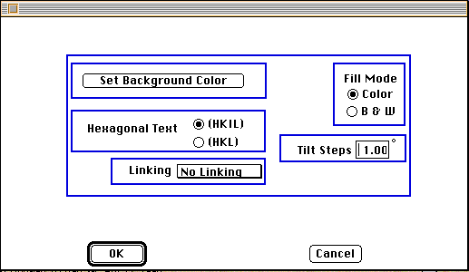

Distributed By: Virtual Labs
Set Misc. Parameters
PATH:Parameter Menu:Set Misc. Params:
The Set Misc. Parameters lets the user control general aspects of the Desktop
environment.

Set Misc. Parameters
Indicate whether hexagonal poles should be displayed using a four or a three
index system.
- Specify whether Desktop Microscopist should plot in a monochrome or
color mode.
- Transfer a complete set of Parameter definitions to the Default Object.
- The Plot Parameters:Display Hexagonal Text; mode is set using two
radio buttons. If the first button is activated, hexagonal plane poles and
directions are displayed using the four index system. This format becomes
standard for all Dialog Boxes, et cetera. If the second button is selected,
hexagonal plane poles and directions are labeled with the three index system.
- The Fill Pattern; set of radio buttons determines the manner in which
Desktop Microscopist attempts to plot calculated images. Upon initialization,
Desktop Microscopist determines the environment and sets the proper default
based on the primary monitor. This option is made available for systems
which may have additional monitors.
- Set Background Color: Use this button to bring up the Background
Color Wheel.
Author: J.ames T.
Stanley
 Desktop
Manual:Dialog Boxes
Desktop
Manual:Dialog Boxes
Distributed By: Virtual Labs
Last Updated:1/12/96 Sat, Apr 27, 1996